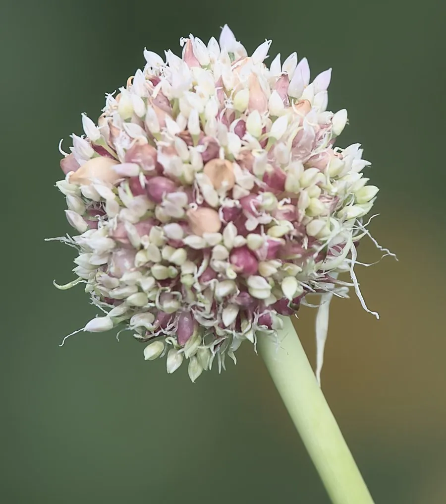

农作物与经济植物 · 植物界
大蒜 Allium sativum

大蒜的鳞茎含大蒜素，辛辣味浓，是重要的调味蔬菜，也有杀菌消炎作用，可鲜食、腌渍和提取蒜油。
- 分类
- 门被子植物门纲单子叶植物纲目天门冬目科石蒜科属葱属
- 栖息环境
- 温带与亚热带的菜地，喜冷凉、排水良好的肥沃土壤
- 地理分布
- 原产中亚与地中海一带，现主产于中国、印度、埃及、韩国等地
- 保护级别
- 暂无评估（栽培作物）
物种志
大蒜是石蒜科一二年生草本，株高 0.3–0.8 m。叶片扁平、线形，表面有蜡粉，叶鞘抱合成假茎。地下鳞茎由多个蒜瓣组成，外被白色或紫色的膜质鳞被，蒜瓣是变态的侧芽。花薹（蒜薹）顶端生有伞形花序，但通常不结种子，生产上用蒜瓣无性繁殖。
大蒜原产中亚与地中海一带，栽培历史已有 5000 多年，是全世界广泛使用的调味蔬菜。它喜冷凉气候，耐寒性较强，适宜在疏松肥沃、排水良好的土壤中种植。蒜瓣含大蒜素，具有辛辣味和较强的杀菌作用，可鲜食、腌渍、制蒜粉，也可提取大蒜油用于医药和保健。蒜薹和青蒜（蒜苗）也是常见蔬菜。中医认为大蒜有解毒杀虫、温中消食之效。中国是世界上最大的大蒜生产国和出口国。
形态与习性
- 株高0.3–0.8 m
- 叶扁平线形，表面有蜡粉
- 鳞茎由多个蒜瓣组成
- 主要成分大蒜素
- 用途调味、腌渍、提取蒜油
- 繁殖用蒜瓣无性繁殖
趣味知识
- 大蒜的辣味来自大蒜素，切碎或压碎后才会大量生成。
- 大蒜素具有较强的杀菌作用，大蒜也被用于保健。
- 中国是世界上最大的大蒜生产国和出口国。